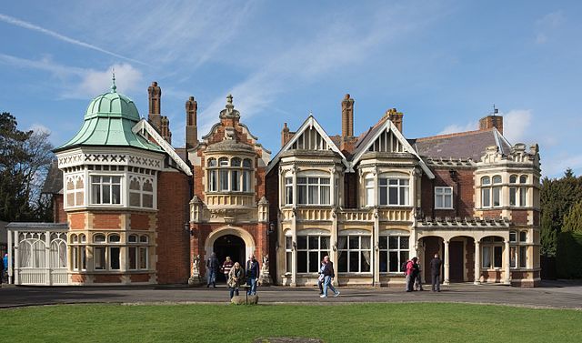

Durante la Seconda Guerra Mondiale, la crittografia ha svolto un ruolo cruciale e la sua importanza è stata estremamente significativa nel conflitto.
Una delle icone più rilevanti di questo periodo è stata la macchina Enigma, utilizzata dalle forze armate tedesche per cifrare le loro comunicazioni.
Tuttavia, nonostante la sua complessità, la macchina Enigma non era inviolabile.
Gli Alleati hanno lavorato duramente per decifrare i messaggi criptati tedeschi, impiegando risorse significative nel campo della criptoanalisi.
Questo sforzo è stato concentrato principalmente nel Regno Unito, dove un gruppo di matematici, criptoanalisti e linguisti si è riunito a Bletchley Park, una tenuta situata a Bletchley, un paese a circa 75 km a nord-ovest di Londra, per decifrare i codici Enigma.

Uno dei contributi più significativi a questo sforzo è stato fatto da Alan Turing, uno dei pionieri dell'informatica.
Turing ha sviluppato la macchina di Turing, un dispositivo teorico in grado di decifrare i messaggi Enigma attraverso il metodo conosciuto come "bomba logica".
Questa tecnica eliminava un gran numero di codici Enigma probabili, riducendo le possibilità.
Per ogni possibile combinazione l'elettricità attivava una catena di deduzioni logiche.
In questo modo era possibile scoprire la presenza di una contraddizione e scartare la combinazione corrispondente. Ciò, insieme ad altre innovazioni criptoanalitiche, ha permesso agli Alleati di decifrare una vasta quantità di messaggi tedeschi, fornendo loro preziose informazioni strategiche sulle intenzioni e sui movimenti delle forze nemiche.
La decifrazione dei codici Enigma è stata una delle chiavi del successo degli Alleati nella guerra, accelerando la vittoria degli Alleati e abbreviando la durata del conflitto.
Secondo il premier britannico Winston Churchill, il lavoro di Turing aiutò a ridurre dai due ai quattro anni la guerra in Europa, salvando così quattordici milioni di vite. La macchina Enigma e il suo tentativo di decifrazione rappresentano quindi un capitolo significativo nella storia della crittografia e della guerra moderna, evidenziando il ruolo cruciale che la crittografia ha giocato nel determinare l'esito dei conflitti.